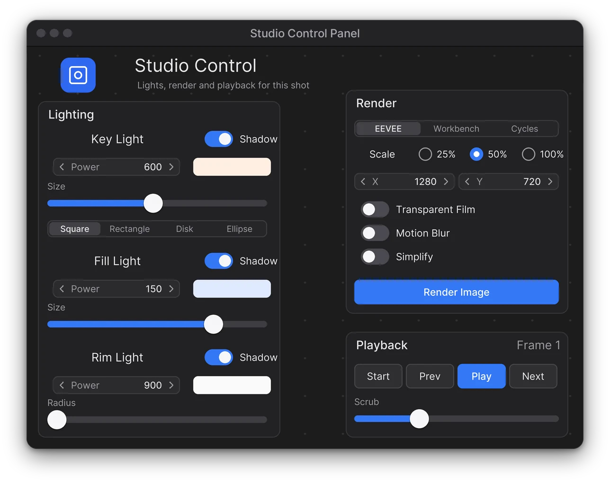

Two kinds of canvas
A blank board for your own control panel.
Flex Space is for control panels: operator buttons, scripts, sliders, toggles, labels and images, used from any workspace. Armature Picker is a canvas saved with an armature, for picking its bones while you pose. Both work the same way.
- Set any area to Flex Space and click New
- Each canvas is a data-block saved in your .blend file
- The header selector switches, renames and keeps canvases
